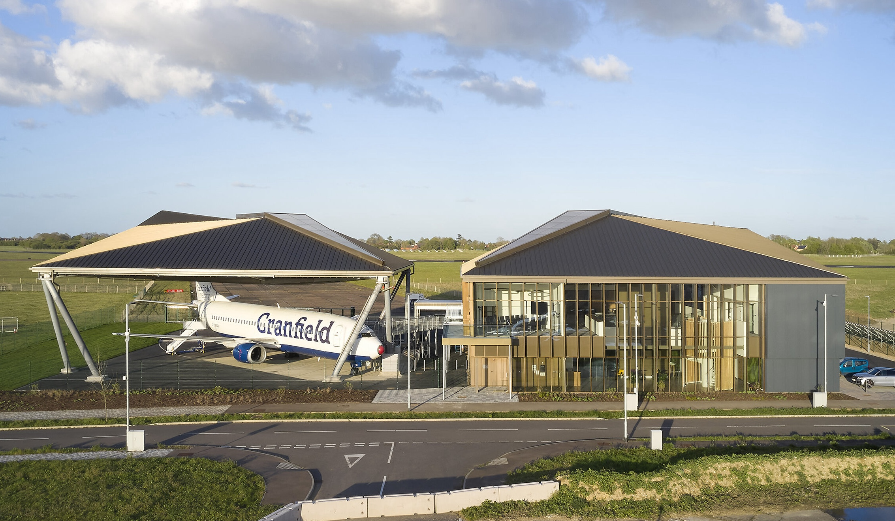
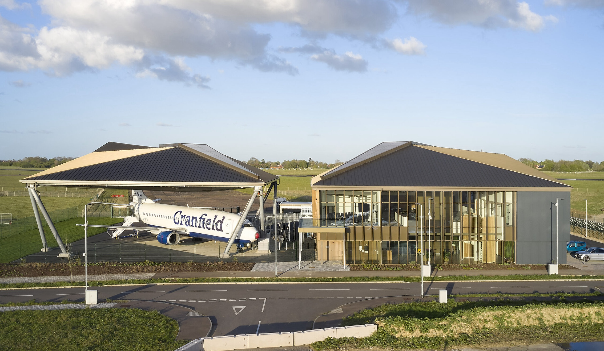
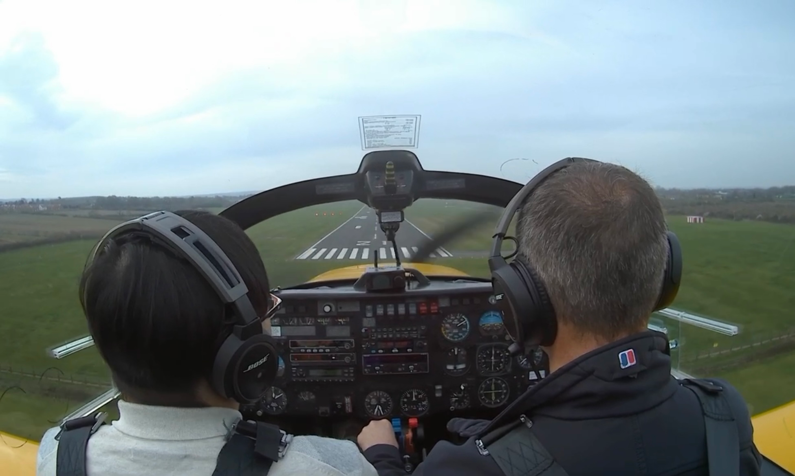

Hello
I am Zhang
Many thanks for your visiting
Contact: zhang.wen.998@cranfield.ac.uk
Please find my CV
I was currently working as an M.Sc. student at the Centre for Aeronautics of Cranfield University (QS World Top 30 in Aerospace), and a member of the Air Traffic Management Laboratory at the Digital Aviation Research and Technology Centre (DARTeC).

I got my M.Sc. in Aerospace Vehicle Design (Avionics System Design) diploma at Cranfield University in November 2023. My supervisor in IRP is Dr. Yan Xu, and my supervisors in GDP are Dr. Huamin Jia, Dr. Toufik Souanef, and Prof. David Zammit-Mangion.
I got my B.Eng. in Automation at Harbin University of Science and Technology in June 2021. I was a member of the HUST-Omron United Industry Automation Training and Research Center, and I have worked under the supervision of Associate Professor Xiaoguang Mu.
I received flight training at Cranfield University and can fly the Slingsby T67 Firefly when accompanied.